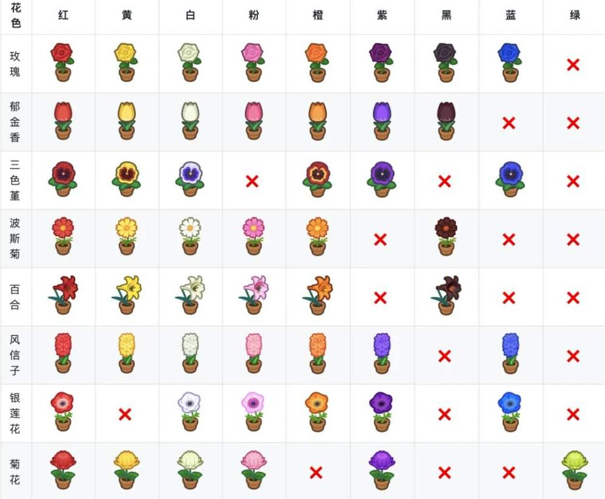
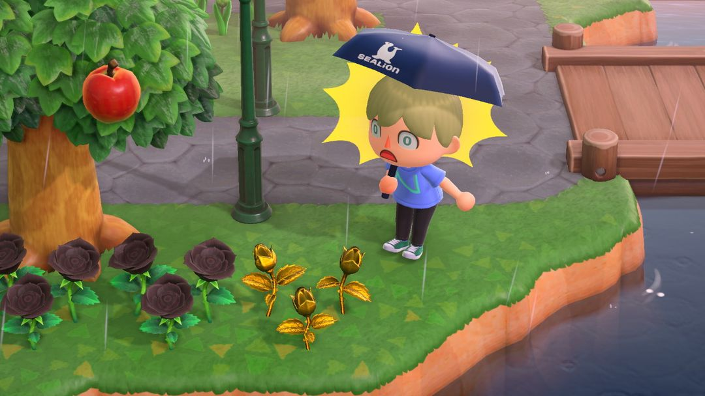
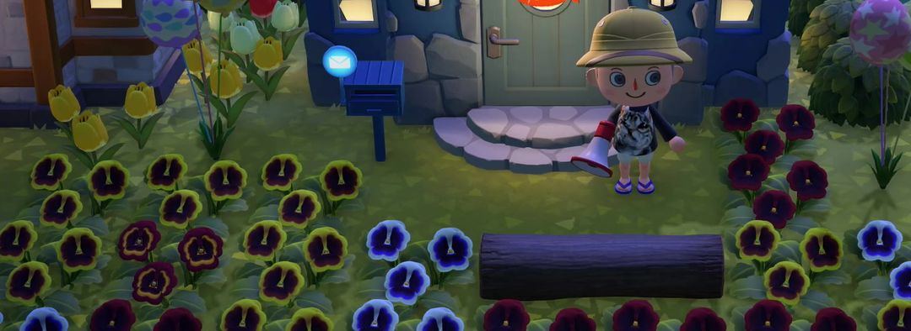
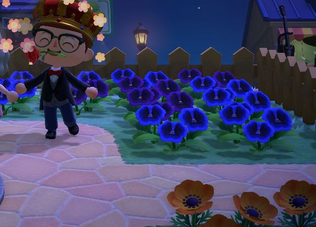

Flower breeding basics
Which pink, orange, purple, black, and blue flowers you can breed from shop seeds alone
Seeds from the shop only come in a few basic colors. Pink, orange, purple, black, blue — all of those have to be bred from the flowers on your island. The idea is simple: plant two of the same flower next to each other, water them, and the next morning a new flower may pop up in an empty spot nearby, with its color decided by the two parents.
When you're new to breeding, the most confusing part is figuring out which flowers a new bloom actually came from. So this guide sticks to the most reliable beginner route: use only flowers grown from shop seeds as parents, put just two in each group with empty space all around, and move new flowers out every day. Get a few friends to help water, and your odds of a new flower jump from 5% to 80% — things move a lot faster.
01How new flowers appear
There are 8 kinds of flowers in the game: roses, tulips, lilies, hyacinths, cosmos, pansies, mums, and windflowers. For them to produce new flowers, all four of these conditions must be met.
First, they have to be the same species. Roses only breed with roses; roses and tulips planted together won't affect each other at all.
Second, the two need to be next to each other. A flower can only pair up if there's a flower of the same species in one of the 8 tiles around it.
Third, they must be watered that day. Only watered flowers have a chance to produce a new flower the next morning. Rainy or snowy days count as the sky watering your entire island for you.
Fourth, there must be an empty tile nearby. New flowers only grow on open ground; if everything around is packed full, nothing will grow even if the pairing succeeds.
There's one more case: a flower with no same-species neighbors can also "clone" itself into a new flower of the same color after being watered. If you want more of a particular color, plant it off on its own and water it daily to let it multiply.
A new flower starts out as a bud, just like the seeds you plant yourself. It takes a few days to bloom, and you'll only see its color once it does.

The colors available for each of the 8 flowers; an × means that flower doesn't come in that color (gold roses aren't in the chart) (Image: animalcrossing.top)
02Watering: call in your friends
Watering on your own only gives flowers a "chance" at breeding, and a pitifully small one. What really works is having players from other islands water for you: the more visitors from other islands who water the same flower, the better its chances of producing a new flower the next day. Here are the numbers.
| Visitors | Chance of a new flower |
| 0 (just you) | 5% |
| 1 | 25% |
| 2 | 35% |
| 3 | 50% |
| 4 | 65% |
| 5 or more | 80% |
Even one friend bumps the odds from 5% to 25% — five times better. Get 5 people watering together, and nearly every pair of parents will produce something the next day. When you're chasing rare colors, set up a session some evening when everyone's online; it's far more efficient than watering alone every day.
NoteDon't dig up flowers on a day they've been watered. Digging one up wipes out that day's watering, including every round your friends did for you.
Golden watering can
Once your island rating reaches 5 stars, Isabelle gives you the golden watering can DIY recipe, made from a watering can and a gold nugget. It waters a 3×3 area in front of you — 9 tiles at once — saving a lot of back-and-forth when tending big flower beds. However, according to the published odds, breeding chances depend only on the number of visitors, so the golden watering can won't make breeding more likely.
What makes it really special is black roses: water black roses with it, and the next new flowers they produce will be gold roses. If you want gold roses, you'll need to breed black roses first, then water them with this can.

Gold roses appearing next to black roses watered with the golden watering can (Image: Nookipedia)
03Colors you can breed straight from seed flowers
Every flower carries a hidden set of "genes." Two red flowers — one grown from shop seeds, one bred — may have different genes and give different results when paired. Since you can't tell them apart by looking, beginners are best off using only seed flowers as parents. The table below assumes seed flowers throughout, so following it gives the most reliable results.
| Flower | Red+White | Red+Yellow | White+White | Red+Red |
| Rose | Pink | Orange 50% | Purple 25% | Black 25% |
| Tulip | Pink 50% | Orange 50% | — | Black 25% |
| Lily | Pink 50% | Orange 50% | — | Black 25% |
| Hyacinth | Pink 50% | Orange 50% | Blue 25% | — |
| Cosmos | Pink 100% | Orange 100% | — | — |
| Pansy | — | Orange 100% | Blue 25% | — |
| Mum | Pink 100% | Yellow 100% | Purple 25% | — |
The percentages are the chance of that color once a pairing succeeds. "—" means that pairing can't produce a new color; you'll only get flowers matching the parents.
Windflowers, which aren't in the table, are a special case: their seeds come in red, white, and orange — no yellow. Using seed flowers, red + orange gives pink 100% of the time, and white + white gives blue 25% of the time.
For roses and lilies, red + red also gives pink about a quarter of the time, on top of black. Rose red + white can produce other colors too, so you may not get pink on the first try — keep at it.
Mum red + yellow still gives yellow, which seems pointless, but it isn't: that flower is a "hybrid yellow" with different genes from seed yellow mums. It's the key to breeding purple and green mums in the next generation, so keep it somewhere separate.

Pansies in front of a house. The red-petaled ones with yellow edges are orange pansies; the blue patch can be bred from two white ones
04Going one generation further
Some colors can't be bred from seed flowers alone; you need to breed hybrids again. The odds in this generation are much lower — a pair of parents might need many days of watering before producing a single one — so these are best worked on over time with friends helping water.
Purple tulips: pair two hybrid orange tulips for about a 6% chance of purple.
Black cosmos: pair two hybrid orange cosmos for about a 6% chance of black.
Blue and purple hyacinths: pair two hybrid orange hyacinths for about a 12% chance of blue; pair those blue hyacinths with each other for about a one-in-four chance of purple. Purple hyacinths take two steps, so build up your blues first.
Purple pansies and purple windflowers: first pair a seed red with a blue to get a batch of "special reds," then pair two special reds for about a 6% chance of purple. The blues are already first-generation hybrids, so this route takes three rounds of breeding.
Purple and green mums: pair two hybrid yellow mums for about a one-in-four chance of purple and a one-in-sixteen chance of green. This is where the "hybrid yellows" you saved in the last section come in.

Blue and purple pansies by a fountain, with a row of orange windflowers in front
As for blue roses, they take several generations and sifting through hundreds of flowers. Set them aside while you're starting out, and come back once you've got the hang of everything above.
05Laying out tidy breeding beds
There's just one rule for laying out your beds: one pair of parents per group, with every tile around them left empty for new flowers. A group looks something like this (□ is an empty tile, R and W are the red and white parents):
□□□□
□RW□
□□□□
The point of this layout is that each flower only touches one other color. When pairing, a flower picks a random neighbor, so if it touches several colors at once, there's no telling which one a new flower came from, and the results won't match the table.
Whenever you spot a new flower in the morning, dig it up and move it that same day, planting it in a separate patch by color. If you leave it in place, it becomes a parent in the next round and muddles that group's results, and it also takes up one of the empty tiles.
Different species don't interfere with each other, so rose groups and tulip groups can be interleaved right next to each other, which saves a lot of space.
Finally, mark your seed flowers. Bred reds and seed reds look exactly alike, and after a while you won't remember which is which. Put a rock or a decoration next to them so you don't mix them up when moving flowers later.
06Put extra flowers in storage
After breeding for a while, you'll pile up lots of flowers in the same color. Storage can be expanded to 9,000 slots, and flowers, saplings, and bushes can all go inside. No need to toss your extras — store them, and plant them all at once when your flower field is planned out.

The Plants tab in storage holds flowers, bushes, and trees (Image: Nintendo Ver. 3.0 promo, via Nookipedia)
NoteLeave flowers you're still using as parents in the ground. Once seed flowers and hybrids of the same color go into storage, there's no telling them apart, and if they get mixed up and replanted, the combinations in the table above won't hold.
07Version changes
Expanding storage to 9,000 slots and storing flowers and trees were both added in Ver. 3.0. If you haven't updated to 3.0, you'll have to plant your extra flowers elsewhere for now, or sell them.
Nook Circle · Search "Nook Circle" on the App Store